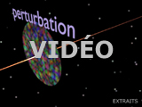
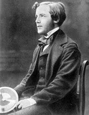

| |
|

1. Une
évanescence ? |
dial dial
dial
|
Cette page qui fait partie du
chapitre XXV est une discussion
entre Jean-Claude, physico-chimiste spécialiste des surfaces picturales,
Jean-Louis, physico-chimiste (CNRS), et Emmanuel, candide.
Cette page tente d'illustrer
comment, à partir de points de vue scientifiques, on en vient très vite aux
conséquences dans l'univers pigmentaire.
|
|
|
Commençons par une précision apportée
par Jean-Claude à un passage
du chapitre VI, « La polarisation de la lumière », lié à la
nature transversale
de la lumière.
Faisons à cette
occasion un court rappel vidéo sur la manière dont la lumière
traverse l'espace. Cliquer sur l'image. C'est un simple schéma
animé de quelques secondes.

Jean-Claude nous
explique ici - et ce thème reviendra sous d'autres angles dans ce
chapitre - qu'une onde électromagnétique pourrait ne pas être
uniquement « transverse ».
Et de fournir quelques
explications.
|
|
Jean-Claude : Dans
l'électromagnétisme classique la propagation de la lumière dans un
matériau est gouvernée par les équations de Maxwell et les relations de
constitution. Ces relations imposent, entre autres, aux champs
électriques et magnétiques d'être
transverses [soit perpendiculaires, cf. animation ci-dessus, ndlr] à la
direction de propagation de la radiation.
|
Cependant, d'après la recherche
bibliographique que j'ai effectuée, il semblerait qu'il existe
différentes situations qui pourraient contredire cette exclusive
transversalité des ondes électromagnétiques :
* la
théorie quantique des champs prédirait en effet la présence de
champs longitudinaux.
Cette contradiction avec les résultats des
équations de Maxwell
serait résolue en considérant que ces ondes longitudinales n'ont
pas de réalité physique mais qu'elles doivent être prises en
compte dans le formalisme mathématique.
Note
Ce type de démarches n'est pas unique en physique. Par exemple il
existe une approche de l'électromagnétisme classique qui consiste
à introduire la notion de charge magnétique libre de manière à
rendre symétrique l'écriture des
équations de Maxwell : une sorte de "dualité électrique /
magnétique" [la question récurrente de la symétrie sera abordée au fil de ce chapitre,
notamment ici]. Cependant cette idée séduisante en reste au
formalisme mathématique car de telles "charges magnétiques"
(monopôles [1])
n'ont jamais été observées.
***
*
Dans un
colloïde,
la moyenne sur tout l'espace des charges superficielles induites
sur la surface des particules pourrait engendrer des ondes
longitudinales.
*
dans le cas des
métaux
et pour un vecteur de faible longueur d'onde, la réponse optique
devient non-locale et là aussi il y aurait la possibilité
d'exciter des ondes longitudinales.
*
Finalement, la théorie classique de la diffusion de la lumière par
un objet de forme quelconque dont les dimensions sont de l'ordre
de grandeur de la longueur d'onde de la radiation incidente,
montre que le champ diffusé possède une composante longitudinale
non négligeable, en plus de la composante transverse habituelle.
Cependant, elle disparaît d'autant plus rapidement que l'on
s'éloigne de la particule.
|
|
Maxwell
Deux mots sur un génie
moderne
Les équations de James
Clerk Maxwell sont une description de l'univers électromagnétique
qui date de 1864, donc d'avant la relativité, la physique quantique,
etc.
Elles ne sont pas la
seule contribution de ce grand savant puisque sans ses travaux sur
la TSF et sur l'ensemble du thème énergie, information et
« feedback », notre monde ne ressemblerait sans doute pas à ce qu'il
est. En théorie, sans Maxwell, ni télé ni ordinateur.

***
Les équations de Maxwell
Les équations de
Maxwell sous leur représentation différentielle sont des équations
aux dérivées partielles des variables d'espace et de temps des
champs électrique et magnétique microscopiques, présents dans un
milieu quelconque. Celui-ci peut être le vide, un matériau homogène
ou hétérogène, linéaire ou non linéaire, isotrope ou anisotrope.
Cependant, seules deux des quatre équations de Maxwell sont
indépendantes. Pour déterminer complètement les quatre vecteurs, il
est nécessaire d'introduire deux équations supplémentaires. Ce sont
les relations de constitution qui caractérisent le milieu de
propagation. |
|
|
De curieux champs
longitudinaux
|
|
|
|
|
|
On retrouve ce genre de situations
dans l'interaction entre les poussières interstellaires et le
rayonnement cosmique ou encore des pigments colorés dispersés dans la
matrice polymère d'une peinture.
La présence de cette composante transverse en champ proche peut être
interprétée de deux manières.
D'abord sous un angle mathématique/technique en rappelant que les équations de Maxwell
[voir encadré] stipulent que c'est
la divergence du champ électrique qui doit être égale à la densité de
charges électriques et non explicitement que le champ électrique doit
être transverse. Par conséquent, la présence de la composante
longitudinale ne contredit pas les relations de Maxwell.
Ensuite avec une analyse plus physique du phénomène en considérant que
la composante longitudinale serait la résultante de l'onde évanescente
crée par les charges induites présentes dans la particule diffusante.
Cependant, je suis loin d'être un expert dans ces domaines et peut être
qu'un lecteur documenté pourrait apporter un commentaire.
[nous écrire]
|
|
Sur le même sujet lire
aussi
Lumière, chats et
miroirs dans le même chapitre
lien |
|
Emmanuel :
Jean-Claude tu disposes d'une expertise sur ce sujet très compliqué
qu'est le comportement de l'interaction électromagnétique en champ
proche ou relativement proche, en particulier dans le domaine
pigmentaire, pictural.
Quelle est au juste la prévisibilité de
ces phénomènes ?
|
|
Pour en revenir aux arts
plastiques |
|
Jean-Claude :
Les théories actuelles permettent de prédire assez correctement les
propriétés optiques d'un milieu hétérogène lorsque la concentration
volumique en pigments reste faible car on peut considérer que ceux-ci
sont situés dans une zone de champ lointain les uns par rapport aux autres. Les
champs sont alors approximés par des ondes sphériques
transverses.
|
|
Tant que les ondes sont
transverses, on reste dans un modèle classique... |
|
Lorsque la fraction volumique en pigment
augmente comme par exemple dans des peintures blanches fortement
chargées en oxyde de
titane la distance entre particules devient très petite. Dans ce cas
chaque pigment « voit » la composante en champ proche des pigments qui
l'entoure. Ce cas est beaucoup plus problématique. Mais il
n'est pas non plus très clair si la difficulté provient de la forme
complexe du champ, ou de la nécessité de prendre en compte la diffusion
multiple.

|
|
...mais quand le matériau
nous ramène au champ proche... |
|
Emmanuel :
Jean-Louis et toi, vous m'avez
averti hors-texte que ce sujet est à la fois très en pointe et très
difficile. Il ouvre sur une multitude de sujets où apparemment la
science n'a pas fini son exploration.
Avant d'aller plus loin dans ce chapitre, peut-on dire que les théories, qui s'opposent quant aux
échelles qu'elles concernent, sont toutes fausses ? N'a-t-on pas besoin
de synthèse ou d'unification et cela correspond-il à un nouvel axe de la
recherche contemporaine ?
Jean-Claude :
Je ne crois pas. Rien a voir avec
la tentative d'unification des lois de la physique, de l'infiniment
grand et de l'infiniment petit.
Je ne dirais pas que les théories sont
fausses. Elles représentent à mes yeux une tentative de modélisation de
la réalité, qui tient compte du développement des connaissances
scientifiques du moment. Chaque modèle possède un domaine d'application.
Il faut juste avoir conscience des limites de ces modèles quand ont
veut les utiliser.
Jean-Louis :
Je suis
d'accord avec Jean-Claude. Les théories sont ce qu'elles sont, elles ont
toutes un domaine d'application. Il y a des tournevis pour les horlogers
et des tournevis pour les garagistes. Chaque outil est adapté à ce qu'il
doit faire. Les études actuelles en champ proche ne résultent pas d'un
désir - inaccessible et inutile - d'unification mais sont motivées par
des problèmes expérimentaux nouveaux.
Suite
_____
[1]
On dit parfois unipôles.
Pour revenir au corps du
texte, cliquez sur le bouton "Précédent" de votre navigateur |
|
Mesure des théories |
Retour
début de page
|
|

 Communication
Communication
|
|